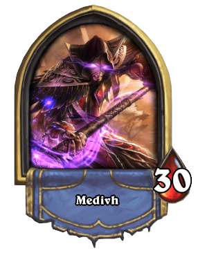
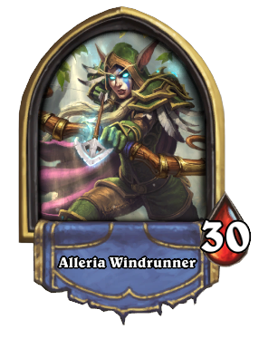
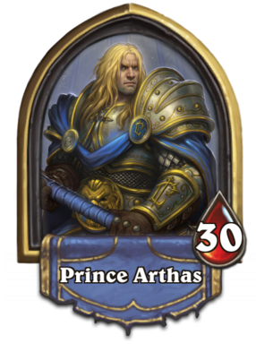
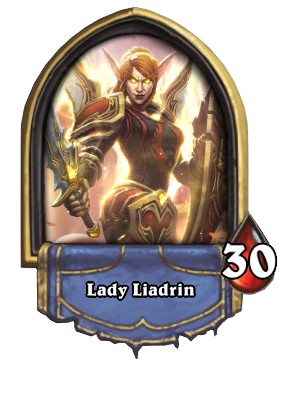
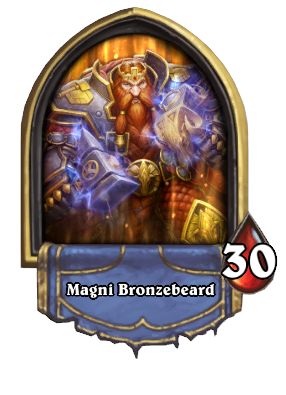
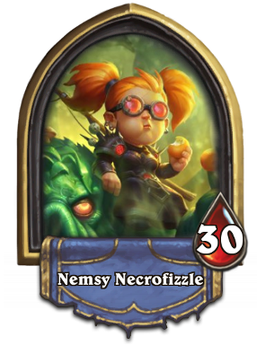
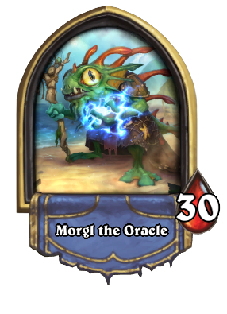
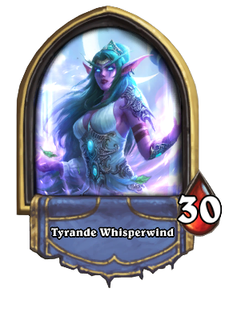
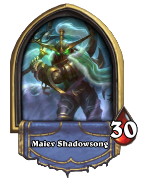

Mage: Khadgar
The Archmage Khadgar is a well-known hero to the denizens of Azeroth! Once Medivh’s apprentice, now he’s renowned as one of the most powerful Mages in history! Whether battling against shadowy councils, or holding the line against unwelcome iron incursions, Khadgar is always a staunch guardian of Azeroth and the entities that call it home.

Mage: Medivh
Magus or Magna Medivh was the last Guardian of Tirisfal, an ancient line of protectors bestowed with great powers to do battle with the agents of the Burning Legion. He was corrupted even before birth, and possessed by the spirit of the demonlord Sargeras who used Medivh in his plan to conquer Azeroth. Medivh contacted the orcish warlock, Gul'dan, and together they opened the Dark Portal, which allowed the Burning Legion to begin its destruction of Azeroth. He was slain shortly after by a party led by one of his friends, Lothar.

Hunter: Alleria Windrunner
High elf ranger and sister to Sylvanas, Alleria Windrunner was head scout of the Alliance Expedition to Draenor. After destroying the Dark Portal, Alleria was forced to escape through a portal to an unknown world, and has not been seen since. Presumed - but not confirmed - dead, her location is an ongoing subject of speculation.

Paladin: Prince Arthas
Arthas Menethil, Crown Prince of Lordaeron and Knight of the Silver Hand, was the son of King Terenas Menethil II and heir to the throne. He was trained as a paladin by Uther the Lightbringer and was inducted into the Order of the Silver Hand. Arthas also had a romantic relationship with the kind sorceress Jaina Proudmoore. Committed to the protection of his people, Arthas was determined to stop the plague spreading throughout Lordaeron.

Paladin: Lady Liadrin
Lady Liadrin is the leader of the Blood Knight order. Once a priestess of the Light, she became an errant paladin and seized power from the naaru after the Scourge destroyed her homeland of Quel'Thalas. She eventually sought redemption for her people, once more embracing the energies of the Sunwell, and now stands as a bitter enemy of the Burning Legion.

Warrior: Magni Bronzebeard
Magni Bronzebeard was the king of the dwarven kingdom of Khaz Modan, Thane of Ironforge and head of the Bronzebeard clan, until he was turned to diamond during a ritual in the heart of Old Ironforge.

Warlock: Nemsy Necrofizzle
Don’t let Nemsy Necrofizzle’s small size and penchant for peaches fool you: behind those pigtails and goggles hides one of the most powerful Warlocks alive. Nemsy is utterly fearless, sharp as a razor, and she’s always cool under pressure. After all, you can’t command fel energies or summon horrifying demons from the twisting nether just by being nice. She’s your perky little pal—and a bonafide fel-flinging, soul-destroying mistress of dark forces!

Shaman: Morgl the Oracle
Morgl the Oracle is a murloc shaman, and member of the Earthen Ring. The World Shaman Thrall describes Morgl as a shaman "whose abilities surpass all others", suggesting he is truly powerful. Morgl's opening remark "Time for a lesson, young one!" suggests he is an elder among his people, if not among the other races of Azeroth. Many of the other murlocs pay tribute to the great oracle.

Priest: Tyrande Whisperwind
Tyrande Whisperwind (pronounced teh-rahn-dah) is the chosen high priestess of the goddess Elune, the former general of the night elf sentinels and the current head of the Sisterhood of Elune. Together with her lifelong mate, the archdruid Malfurion Stormrage, she has represented the highest leadership of the night elves since the fall of Queen Azshara and the Highborne caste ten thousand years ago. In World of Warcraft, she is found inside the Temple of the Moon within the Kaldorei's capital city of Darnassus.
Rogue: `Maiev Shadowsong
Maiev Shadowsong is a night elf Warden and former Priestess of the Moon. She grew up in the ancient Kaldorei Empire and eventually joined the esteemed Sisterhood of Elune, rising through its ranks to become a senior priestess. During the infamous War of the Ancients, around 10,000 years before the events of the First War, Maiev, along with her younger brother, captain of the Suramar Guard Jarod Shadowsong, played a major role in the fight against the Burning Legion, as part of the Kaldorei Resistance.